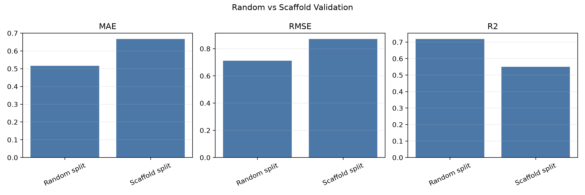
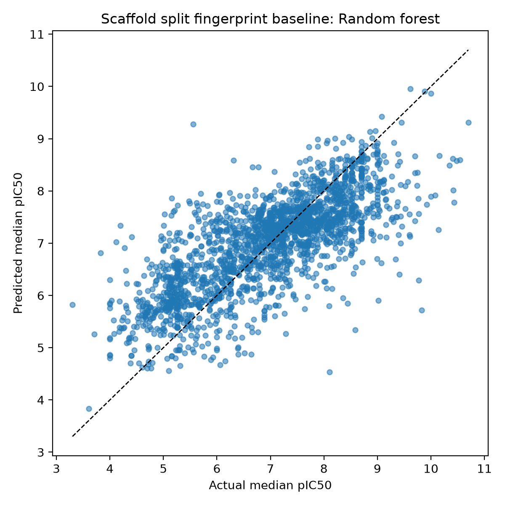

Flagship Project
EGFR QSAR / CADD Benchmark
Retrospective EGFR pIC50 baseline from ChEMBL with RDKit descriptors, Morgan fingerprints, and random versus scaffold split validation.
1. Overview
Built a reproducible EGFR QSAR benchmark to show the difference between conventional random-split performance and scaffold-aware validation.
2. Scientific / Technical Problem
Random splits can overstate molecular-property model performance when close analogs appear in train and test sets. The scaffold split tests whether the baseline generalizes across chemotypes.
3. Dataset Or System
- ChEMBL EGFR IC50 workflow.
- Cleaned EGFR activity records: 10,834 rows.
- Model-ready records: 10,593 rows.
- RDKit descriptor table: 10,834 rows.
4. Methods
ChEMBL retrieval and curation, pIC50 transformation, RDKit descriptors, Morgan fingerprints, random forest, gradient boosting, ridge regression, dummy mean baselines, and applicability-domain summaries.
5. Validation Strategy
Random split was used as a conventional retrospective baseline. Bemis-Murcko scaffold split was used as the stronger validation test for scaffold generalization.
6. Key Results
| Model / split | RMSE | R2 | Source |
|---|---|---|---|
| Morgan random forest, random split | 0.712 | 0.719 | `fingerprint_baseline_metrics.csv` |
| Morgan random forest, scaffold split | 0.871 | 0.550 | `scaffold_fingerprint_metrics.csv` |
7. Figures


8. Limitations
- Baseline retrospective QSAR.
- No production-grade model claim.
- No prospective validation.
- No clinical utility claim.
- No binding-mechanism claim without additional evidence.
9. Reproducibility
The public portfolio includes cached metrics, figures, scripts, a final report, and a recruiter-readable notebook. Full reproduction may require ChEMBL network access.
10. What This Demonstrates
Practical RDKit/ChEMBL QSAR construction, leakage-aware validation, and careful interpretation of retrospective baseline models.